Surveillance Anxiety and Public Safety at Music Festivals
Executive Summary
Problem: Surveillance and policing in public spaces are typically framed as solutions to safety, yet the degree to which they are perceived as safe – or as threats – by members of the public remains poorly understood. Music festivals offer a uniquely informative field setting: they are liminal spaces with strong community norms, and they experience rapid, visible step-changes in surveillance infrastructure each season, making reactions to new security measures highly observable.
Approach: This portfolio page covers two published papers drawing on the same dataset: a 2020 pilot study (Annals of the American Association of Geographers) reporting descriptive findings from an initial sample of 201 festival-goers, and a 2022 full analysis (The Canadian Geographer) reporting multivariate models from the complete sample of 216. An online survey of adult festival-goers captured safety concerns, preferences for safety measures, feelings about surveillance, and behavioral responses to surveillance. Bayesian multilevel models (cumulative logit family) were fit for ordinal outcomes; logistic regression was used for binary outcomes. Predictors were sex, festival experience, and sexual orientation.
Insights: Community ethos – not policing or surveillance – is the primary driver of perceived safety. Significant sex and experience effects structure nearly every dimension of the data: females report greater safety concerns, more interest in safety measures, and stronger behavioral responses to feeling unsafe; males are significantly more negative about formal security measures. LGBQA+ participants show elevated concern about terrorism and a stronger sense that surveillance changes the festival vibe. More experienced festival-goers show declining safety concerns but increasing sensitivity to surveillance.
Significance: These findings have direct implications for smart city design and public safety policy. Surveillance and security infrastructure – even when well-intentioned – do not meet citizen safety concerns and may actively degrade the experience of public space. Peer-to-peer and community-based safety measures are consistently preferred, echoing calls from the Defund the Police and Black Lives Matter movements for community-centered approaches to public safety.
Key Findings
- 87% of participants felt festival ethos – not police or surveillance – best creates safety; only 21% endorsed surveillance and 25% endorsed police as preferred safety measures.
- 56% felt surveillance changes the festival vibe and 44% reported surveillance-induced anxiety.
- Females are significantly more likely to report safety concerns, prefer safety measures, and decline to attend festivals due to feeling unsafe; males are significantly less likely to endorse police or surveillance as safety measures.
- More experienced festival-goers are significantly less likely to attend a festival if surveillance is introduced, with probability increasing from 15% (1–2 festivals) to 35% (6+ festivals).
- LGBQA+ participants are twice as likely as heterosexuals to feel that surveillance changes the festival vibe (80% vs 50% probability).
- Live performances were the top-ranked reason for attending festivals across all gender groups; substances and sex were consistently ranked last.
2020 pilot: Crampton, J.W., Hoover, K.C., Smith, H., Graham, S., & Berbesque, J.C. (2020). Smart festivals? Security and freedom for well-being in urban smart spaces. Annals of the American Association of Geographers, 110(6), 1997–2015. DOI: 10.1080/24694452.2019.1662765
2022 full study: Hoover, K.C., Crampton, J.W., Smith, H., & Berbesque, J.C. (2022). Surveillance, trust, and policing at music festivals. The Canadian Geographer, 66(2), 202–219. DOI: 10.1111/cag.12695
Research Questions
2020 pilot: How do festival-goers feel about the rapid introduction of smart surveillance technology into formerly less-policed spaces, and do these feelings vary by gender?
2022 full study: Do festival-goers perceive surveillance and formal security measures as enhancing or threatening their safety, and do these perceptions vary by sex, experience, or sexual orientation?
A Note on Reproducibility
The 2020 pilot was published before full methods documentation was standard practice in this research group. The published figures used a pilot sample (n = 201) with an 8-category safety concern coding scheme and gender as a three-level variable (Female/Male/Non-binary, with Trans and Intersex collapsed into Non-binary due to small cell sizes). The figures presented here use the revised 6-category coding from the 2022 analysis and the full sample (n = 216). Minor differences from the published figures reflect these revisions rather than data discrepancies. The figshare dataset linked in the published paper is the ground truth for the pilot analysis; our revised figures are faithful to that coding where possible and documented where they diverge.
2020 Pilot Study Findings
Why Attend Festivals?
Participants ranked six reasons for attending festivals. Live performances were the top-ranked reason across all gender groups, followed by going with friends. Substances and sex were consistently ranked last. Non-binary participants ranked live performances slightly higher than female and male participants. Rules-free zone and getting away from everyday life occupied the middle ranks with little gender differentiation.
Figure A. Why attend festivals? Distribution of rankings by reason.
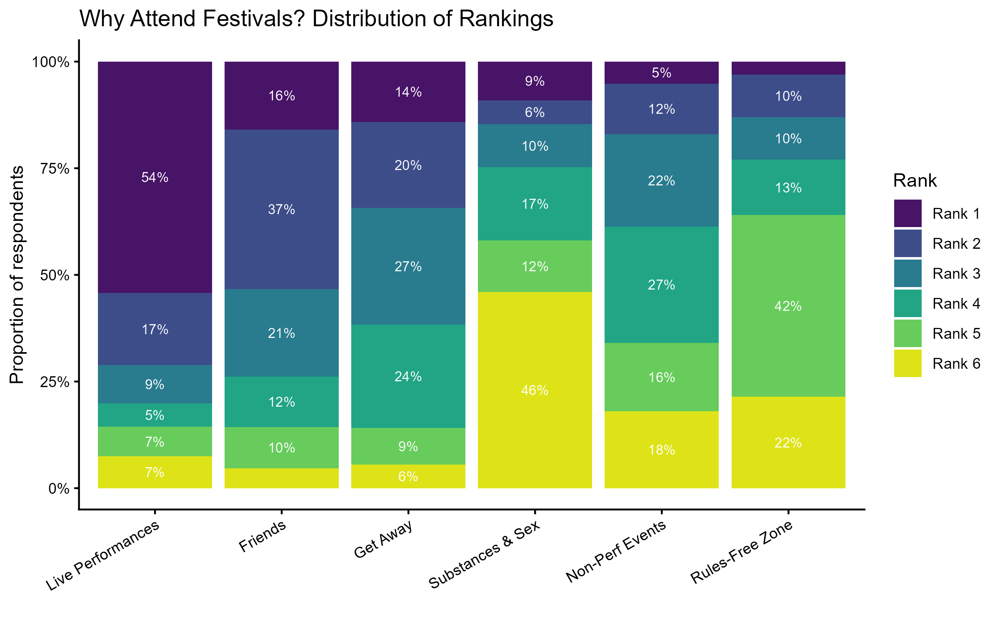
Figure B. Why attend festivals? Mean rank by gender.
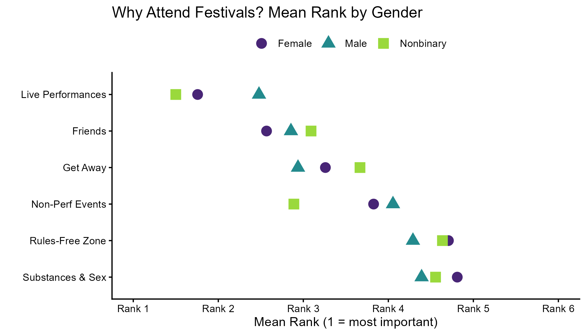
Figure C. Why attend festivals? Rank distribution heatmap.
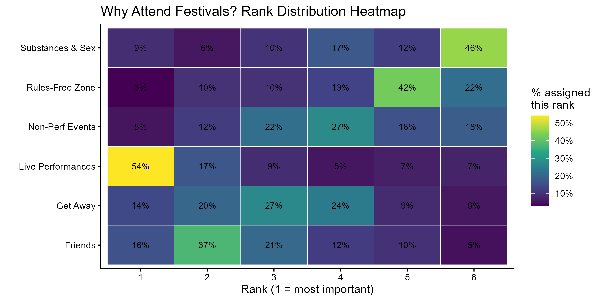
Interpretation: The dominance of live performances over escapist motivations (rules-free zone, substances and sex) challenges assumptions in the smart city literature that festival-goers primarily seek liminal release from social norms. The community and cultural dimensions of festival attendance – performances, friends – are the primary draws, which contextualises why surveillance that degrades the social atmosphere is so unwelcome.
Safety Concerns
Unwanted security was the most commonly selected concern (46%), followed by crowd violence (38%), sexual safety (33%), and police (30%). Non-binary participants showed consistently elevated concern across categories. Females reported markedly higher sexual safety concerns than males.
Figure 1. Safety concerns by gender.
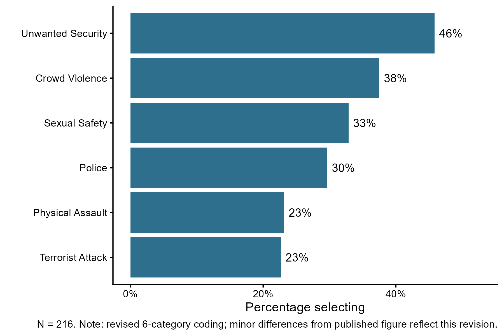
The published figure used an 8-category coding scheme and the pilot n = 201. The figure above uses the revised 6-category coding and full sample n = 216. See repository for details.
Figure 2. Safety concerns by gender (stacked).
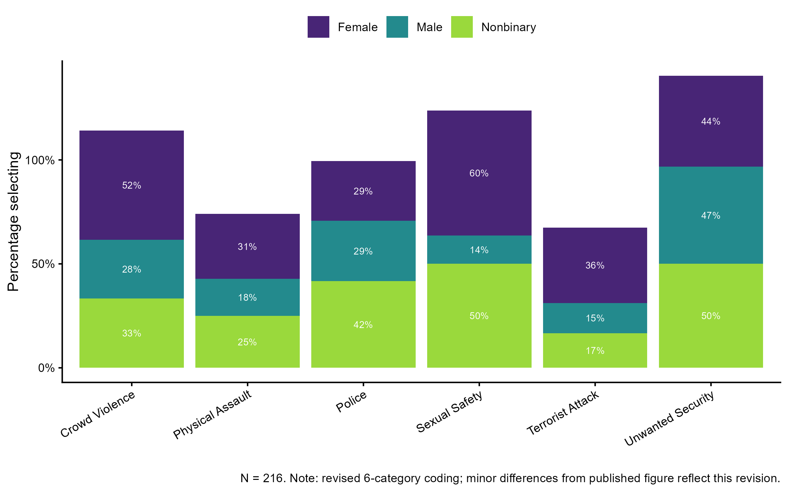
Safety Measures
Going with friends and festival ethos were the top-rated safety measures across all gender groups. Formal authority-based measures – police, surveillance, private security – were consistently the least preferred. Non-binary participants showed notably low endorsement of surveillance (0%) and police (10%).
Figure 3. Safety measures by gender.
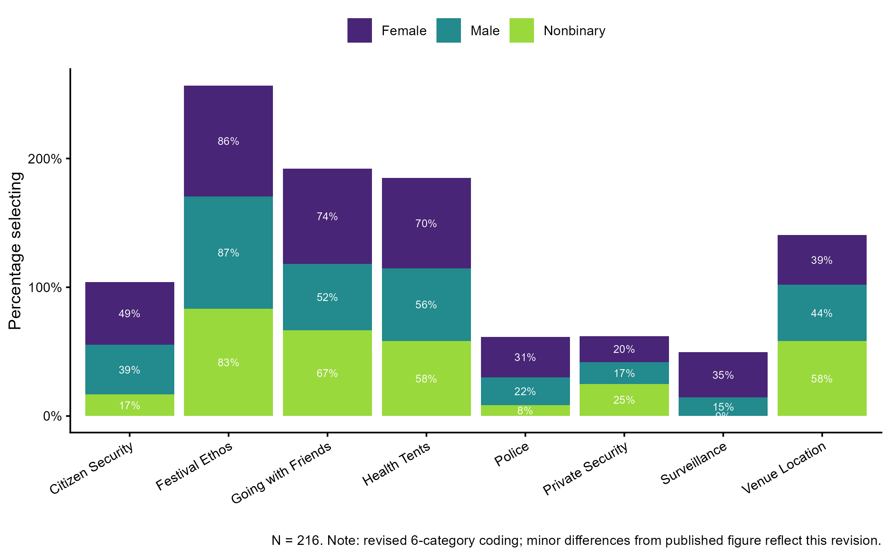
Feelings About Surveillance
Changes vibe and watched by the man were the strongest feelings reported across all gender groups. Non-binary participants showed the highest rates of feeling watched (75%) and that surveillance changes the vibe (70%). Females were more likely than males to report feeling safer with surveillance present, though this is likely a reporting outlet effect rather than genuine security.
Figure 4. Feelings about surveillance by gender.
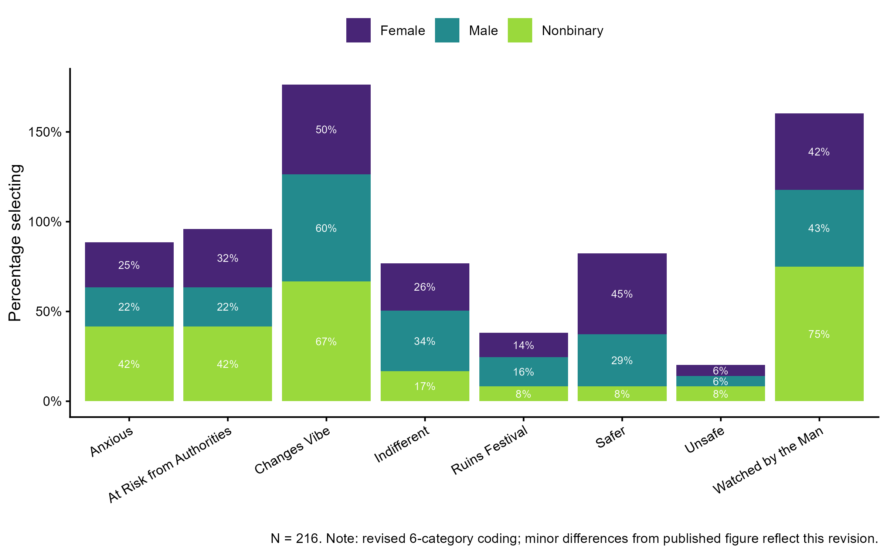
Interpretation: The 2020 findings established the core pattern that the 2022 analysis would test with multivariate models: surveillance is experienced as socially costly, particularly by non-binary and female participants, and community-based measures are consistently preferred over formal security.
2022 Full Study Findings
General Safety Concerns
Participants were asked about their general personal safety concerns at festivals and whether those concerns had changed in the last five years. Experience significantly predicted general safety concerns (Experience.L = -0.81, 95% CI [-1.38, -0.22]) with declining concerns as experience increased – the probability of having no concerns rose from approximately 30% in those with 1–2 festivals to 60% in those with 6+ (Figure 1A). Sex also predicted general safety concerns significantly (Male = -1.51, 95% CI [-2.16, -0.89]), with the same 30% to 60% shift from females to males in the probability of no concerns (Figure 1B). Very few respondents had major concerns, and those who did tended to be female or less experienced.
Figure 1. General safety concerns by experience level (A) and sex (B). Jittered raw data and marginal effects with 95% credible intervals.
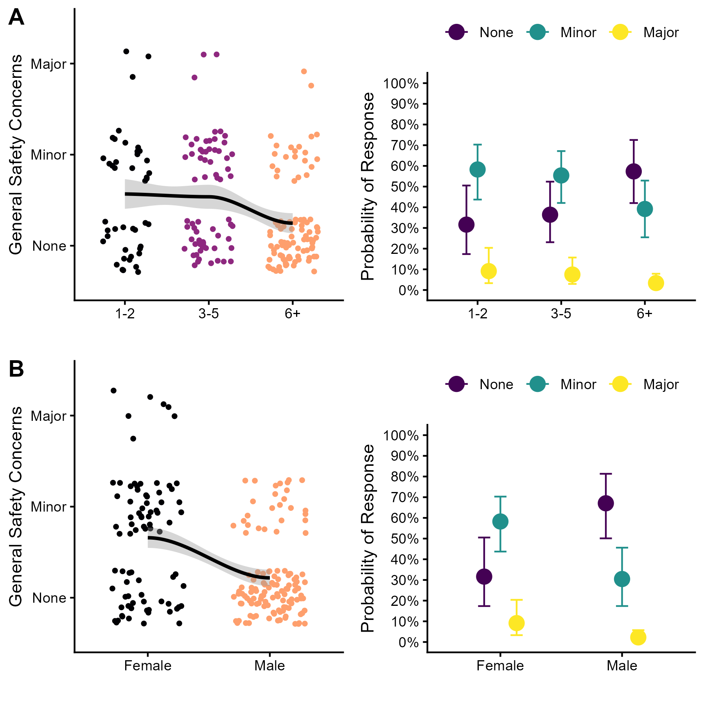
Interpretation: Experience and sex are the primary drivers of general safety concern. The convergence of these two effects – both shifting the no-concern probability from 30% to 60% – suggests that the privilege of feeling safe at festivals is structured by both familiarity and sex.
Specific Safety Concerns
Unwanted security was the most commonly selected specific concern (46%), followed by crowd violence (37%), sexual safety (33%), police (30%), terrorism (23%), and physical assault (23%). Table 1 reports model estimates and confidence intervals for all significant predictors across all outcomes.
Physical assault concerns declined significantly with experience (Experience.L = -0.61, 95% CI [-1.21, -0.01]), with a sharper decline after 1–2 festivals (Figure 2A). Crowd violence showed the same experience pattern but with the steepest decline after 3–5 festivals (Figure 2B), and females were twice as likely as males to report crowd violence concerns (Figure 2C). Females were almost three times more likely than males to report sexual safety concerns (Male = -2.09, 95% CI [-2.81, -1.40]; Figure 2D). Both females (Figure 2E) and LGBQA+ respondents (Figure 2F) were approximately twice as likely as their counterparts to report terrorism concerns.
Figure 2. Specific safety concerns. (A) Physical assault by experience; (B) crowd violence by experience; (C) crowd violence by sex; (D) sexual safety by sex; (E) terrorism by sex; (F) terrorism by sexual orientation. Jittered raw data and marginal effects with 95% confidence intervals.
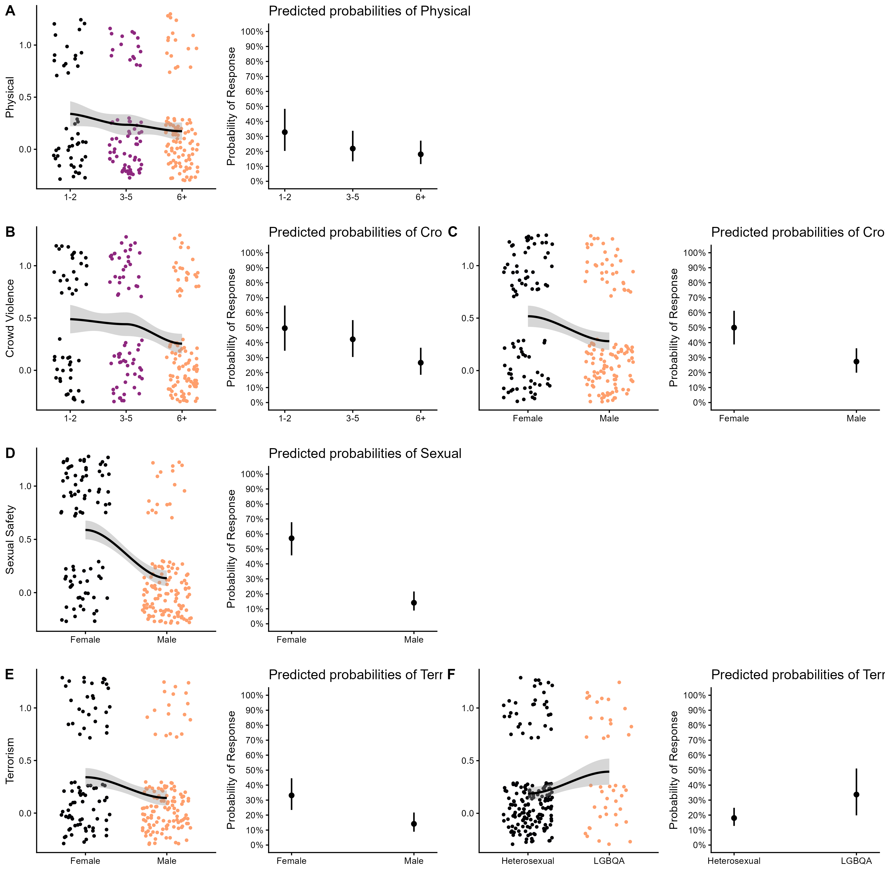
Interpretation: Safety concerns are strongly sex-structured throughout. The terrorism finding for LGBQA+ respondents is notable – it likely reflects concern about being targeted as a community rather than generalised terrorism anxiety, though this remains speculative.
Safety Measures
Participants were asked what safety measures they prefer at festivals. Ethos/vibe was overwhelmingly preferred (87%), followed by health tents (62%), going with friends (61%), location choice (43%), and citizen security (41%). Formal authority-based measures were the least preferred: police (25%), surveillance (21%), and private security (19%).
Males were significantly less likely than females to endorse police (Male = -0.68, 95% CI [-1.37, -0.01]; Figure 3A) and surveillance (Male = -0.96, 95% CI [-1.68, -0.26]; Figure 3B) as safety measures. Less experienced festival-goers were marginally more likely to endorse citizen security (Experience.L = -0.39, 95% CI [-0.92, 0.14]; Figure 3C). Females were significantly more likely than males to report safety through going with friends (Male = -0.75, 95% CI [-1.38, -0.13]; Figure 3D).
Figure 3. Safety measures. (A) Police by sex; (B) surveillance by sex; (C) citizen security by experience; (D) friends by sex. Jittered raw data and marginal effects with 95% confidence intervals.
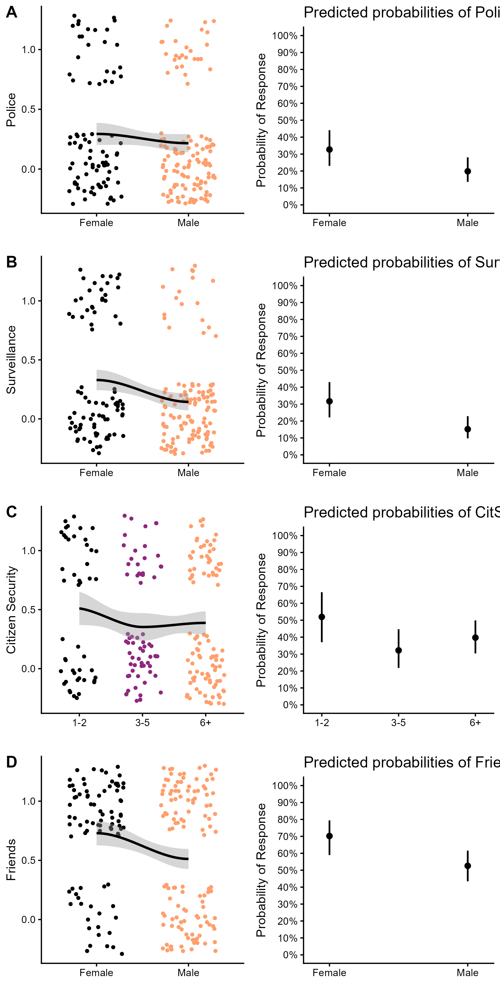
Interpretation: The near-uniform preference for ethos over formal security – and the male bias against authority-based measures – is among the study’s most striking findings. That males, who face fewer safety threats at festivals, are the most opposed to formal security measures, likely reflects a privilege dynamic: authority-based measures represent an intrusion rather than a protection.
Feelings About Surveillance
Surveillance changing the festival vibe was the strongest feeling reported (56%), followed by anxiety (44%), feeling watched (44%), feeling safe (34%), indifference (30%), and feeling at risk (27%).
Females were significantly more likely than males to feel safe in the presence of surveillance (Male = -0.66, 95% CI [-1.29, -0.03]; Figure 4A), though this is not a straightforward positive finding – females may recognise surveillance as a reporting outlet without experiencing it as genuine protection. The probability of feeling safe from surveillance dropped from approximately 50% to 30% between those with 1–2 and 6+ festivals (Figure 4B). LGBQA+ participants were significantly more likely to feel surveillance changes the festival vibe (LGBQA+ = 1.20, 95% CI [0.37, 2.12]; Figure 4C), with an 80% probability compared to 50% in heterosexuals. The changed vibe feeling also increased with experience from approximately 40% to 60% (Experience.L = 0.59, 95% CI [0.05, 1.15]; Figure 4D).
Figure 4. Feelings about surveillance. (A) Feeling safe by sex; (B) feeling safe by experience; (C) changes vibe by sexual orientation; (D) changes vibe by experience. Jittered raw data and marginal effects with 95% confidence intervals.
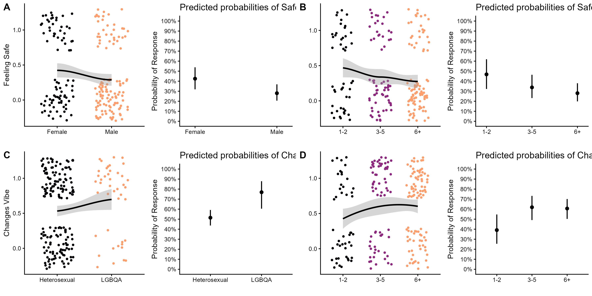
Interpretation: The combination of surveillance-induced anxiety (44%) and the vibe effect (56%) – both more pronounced in LGBQA+ respondents and more experienced festival-goers – suggests that surveillance imposes real experiential costs that accumulate with exposure.
Surveillance Behaviour
More experienced festival-goers were significantly more likely to notice changes in surveillance (Experience.L = 0.62, 95% CI [0.09, 1.18]; Figure 5A). Males were significantly less likely than females to want more surveillance (Male = -0.86, 95% CI [-1.51, -0.24]; Figure 5B). Experience significantly predicted declining inclination to attend if surveillance was introduced (Experience.L = -0.61, 95% CI [-1.14, -0.07]; Figure 5C), with the probability of being less inclined rising from 15% to 35% across experience levels. Males were significantly less likely than females to have declined to attend a festival due to feeling unsafe (Male = -1.21, 95% CI [-2.11, -0.32]; Figure 5D).
Figure 5. Surveillance behaviour. (A) Noticing changes by experience; (B) need more/less surveillance by sex; (C) inclined to attend if surveillance by experience; (D) declined to attend – felt unsafe by sex. Jittered raw data and marginal effects with 95% confidence/credible intervals.
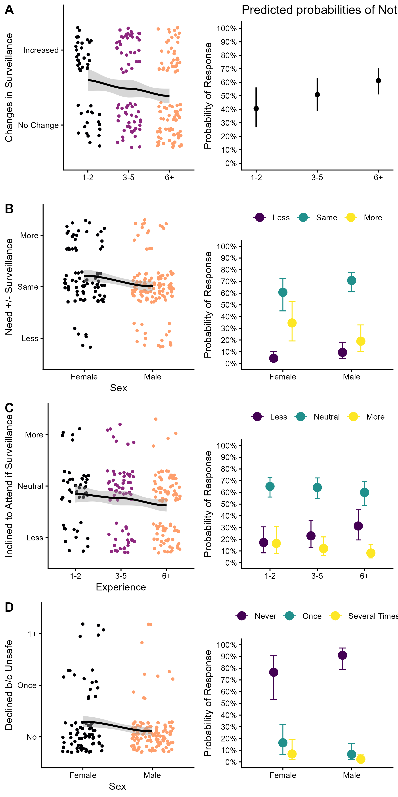
Interpretation: The behavioural findings close the loop: surveillance does not just change feelings, it changes behaviour. The experience effect on attendance intention is particularly policy-relevant – the most knowledgeable festival-goers are the most likely to vote with their feet against surveillance.
Model Results Summary
Table 1. Significant predictors across all outcome variables. Estimates are log-odds (GLM) or latent-scale log-odds (BRM cumulative logit). % Chose: proportion of the sample selecting each response option.
| Outcome | Predictor | Est | Err | CI 2.5% | CI 97.5% |
|---|---|---|---|---|---|
| General safety concerns | |||||
| Personal safety | Experience.L | -0.81 | 0.29 | -1.38 | -0.22 |
| Personal safety | Male | -1.51 | 0.33 | -2.16 | -0.89 |
| Specific safety concerns | |||||
| Physical (23%) | Experience.L | -0.61 | 0.30 | -1.21 | -0.01 |
| Terrorism (23%) | Male | -1.12 | 0.37 | -1.86 | -0.41 |
| Terrorism (23%) | LGBQA+ | 0.88 | 0.42 | 0.05 | 1.69 |
| Sexual (33%) | Male | -2.09 | 0.36 | -2.81 | -1.40 |
| Crowd violence (37%) | Male | -0.90 | 0.32 | -1.53 | -0.28 |
| Crowd violence (37%) | Experience.L | -0.61 | 0.28 | -1.17 | -0.06 |
| Safety measures | |||||
| Surveillance (21%) | Male | -0.96 | 0.36 | -1.68 | -0.26 |
| Police (25%) | Male | -0.68 | 0.35 | -1.37 | -0.01 |
| Citizen security (41%) | Experience.L | -0.39 | 0.27 | -0.92 | 0.14 |
| Friends (61%) | Male | -0.75 | 0.32 | -1.38 | -0.13 |
| Feelings about surveillance | |||||
| Safe (34%) | Male | -0.66 | 0.32 | -1.29 | -0.03 |
| Safe (34%) | Experience.L | -0.60 | 0.28 | -1.15 | -0.06 |
| Changes vibe (56%) | Experience.L | 0.59 | 0.28 | 0.05 | 1.15 |
| Changes vibe (56%) | LGBQA+ | 1.20 | 0.44 | 0.37 | 2.12 |
| Surveillance behaviour | |||||
| Notice changes | Experience.L | 0.62 | 0.28 | 0.09 | 1.18 |
| Need more/less | Male | -0.86 | 0.33 | -1.51 | -0.24 |
| Inclined to attend if surveillance | Experience.L | -0.61 | 0.27 | -1.14 | -0.07 |
| Declined – felt unsafe | Male | -1.21 | 0.45 | -2.11 | -0.32 |
Study Design
Data Source: Online survey of adult festival-goers collected in two waves between September 2018 and October 2019 (Wave 1: n = 189; Wave 2: n = 27). Participants were recruited via social media, university classrooms, listservs, and professional organisations. Two respondents under 18 were excluded; final analytic sample n = 216. The pilot analysis (2020 paper) used a snapshot of the data at n = 201.
Data Handling: Gender and sexual orientation responses were recoded for analytical reliability. For the 2022 analysis, gender was reduced to a sex binary (Female/Male) by assigning individuals who selected both female and non-binary to female and those who selected male and non-binary to male (n = 5 reassigned). Non-binary, trans, and intersex samples were too small for multivariate analysis but individuals in those groups were retained via sex-based affiliation. For the 2020 pilot figures reproduced here, Trans and Intersex were collapsed into Non-binary, yielding a three-level Gender variable (Female/Male/Non-binary; n = 12 Non-binary). Sexual orientation was collapsed to a heterosexual/LGBQA+ binary. Age and experience were correlated (tau = 0.291, z = 4.7, p < 0.001); experience was used in models for parsimony.
Safety concern categories were consolidated from 8 items in the original pilot instrument to 6 in the revised analysis: Sexual Harassment and Sexual Assault were combined into Sexual Safety; Unwanted Solicitation was dropped as analytically distinct from security concerns. Figures for both papers use the 6-category revised coding; minor differences from the published 2020 figures reflect this consolidation.
Analytical Approach:
- Descriptive summary of demographic factors; Kendall’s tau correlation between age and experience.
- Ranked choice visualisation of festival attendance motivations (new analysis).
- Descriptive proportion figures by gender for 2020 pilot findings.
- Bayesian multilevel models with cumulative logit family (brms) for ordinal outcomes: general personal safety, changes in safety, need for more/less surveillance, inclined to attend if surveillance, declined to attend due to feeling unsafe.
- Logistic regression (glm, binomial family) for binary outcomes: all specific safety concerns, safety measures, feelings about surveillance, and noticing increased surveillance. Type II likelihood ratio tests via car::Anova().
- Marginal effects extracted with ggeffects and conditional_effects (brms); scaled to probability on the y-axis.
- Figures assembled with cowplot; raw data jittered and overlaid with loess smoothed trend lines.
Project Resources
Repository: github.com/kchoover14/surveillance-police-trust-festivals
Data: Survey data collected via SurveyMonkey. Raw data available in the repository under CC BY 4.0 as stated in the published papers. Original pilot data also available on figshare.
Code:
revised-etl– reads raw SurveyMonkey export, reconciles two-wave data structure, applies variable coding decisions, outputsrevised-data.xlsx(9 analytical tabs) andrevised-data-ranked-choice.xlsxrevised-models– data loading, descriptive statistics, proportion tables, all Bayesian and logistic regression models, results sunk to revised output txt files, model objects saved as RDS; includes consolidated model fit checks (revised-results-fit-checks.txt)revised-figures– loads saved model objects, builds all five figures for the 2022 paper, saves as PNGrevised-annals-figures– builds all figures for the 2020 pilot paper including new ranked choice visualisations, saves as PNG
Project Artifacts:
2022 paper figures: revised-fig1.png through revised-fig5.png
2020 pilot figures: revised-annals-fig1.png through revised-annals-fig4.png; revised-annals-fig-rc-stacked.png, revised-annals-fig-rc-dot.png, revised-annals-fig-rc-heat.png
Model results: output txt files for descriptives, proportion tables, general safety, specific safety concerns, safety measures, feelings, surveillance behaviour, and model fit checks
Environment:
renv.lockandrenv/– restore withrenv::restore()
License:
Code and scripts © Kara C. Hoover, licensed under the MIT License.
Data, figures, and written content © Kara C. Hoover, licensed under CC BY-NC-ND 4.0.
Tools & Technologies
Languages: R
Packages: readxl | dplyr | tidyr | writexl | janitor | broom | PerformanceAnalytics | ordinal | brms | coda | performance | see | car | ggplot2 | scales | cowplot | ggeffects
Expertise
Domain Expertise: survey design | survey data analysis | Bayesian modeling | logistic regression | public safety | surveillance studies | human geography
Transferable Expertise: Demonstrates ability to design and execute a mixed-methods empirical study – from survey instrument through multivariate modeling to policy-relevant interpretation – in a domain with direct applications in smart city planning, event security, and community-centred policing policy. Also demonstrates transparent data stewardship: documenting coding decisions, reconciling multi-wave survey data, and honestly accounting for reproducibility challenges when original methods documentation is incomplete.